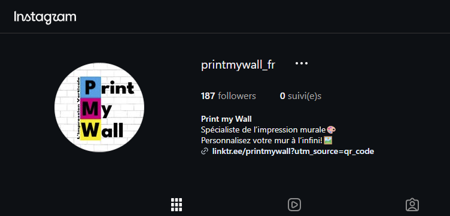
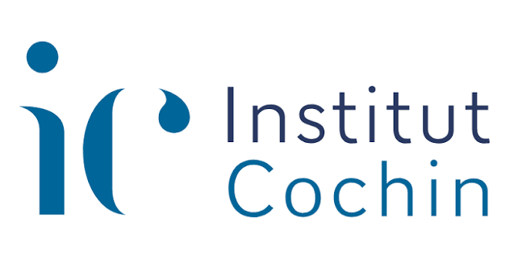

05 — Projets professionnels
Expérience professionnelle
Au cours de ma scolarité, j'ai pu acquérir de l'expérience en milieu professionnel à travers deux années d'alternance et un stage.
Gestion de contenu des réseaux sociaux et du site internet
Pendant cette alternance, j'ai gérer les réseaux sociaux Instagram et Linkedin pour alimenter, montrer le savoir-faire et essayer de faire croître le nombre de clients de l'entreprise.

Refonte de deux sites internets et gestion des réseaux sociaux
J'ai pu réaliser la refonte de deux sites internets Dataquiz et Quantitest au sein de l'entreprise ainsi que l'alimentation de contenu sur les réseaux sociaux à travers des articles de blogs sur la data via Instagram, Linkedin et Facebook.

Stage pratique en laboratoire et étude
Stage au sein d'un laboratoire qui mène à l'élaboration d'un rapport de stage. J'ai pu mener une étude scientifique au cours de laquelle j'ai mené de multiples protocole pour parvenir au résultat.

Contact